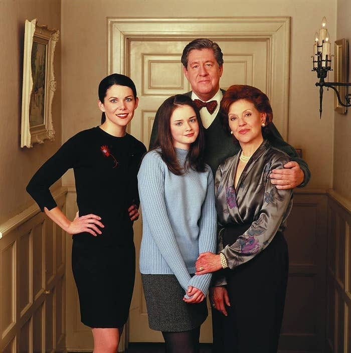
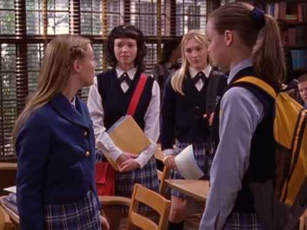

What Is Gilmore Girls?
Gilmore Girls" is a beloved television series set in the fictional town of Stars Hollow, Connecticut that originally aired from 2000 to 2007, with a revival in 2016 titled "Gilmore Girls: A Year in the Life." Created by Amy Sherman-Palladino, the show is known for its witty and fast-paced dialogue, centered around the close-knit mother-daughter duo of Lorelai and Rory Gilmore, played by Lauren Graham and Alexis Bledel, respectively. Set in the charming, fictional town of Stars Hollow, the series explores themes of family, friendship, love, and the pursuit of dreams while maintaining a strong focus on the unique bond between its two lead characters. "Gilmore Girls" has a dedicated fan base and continues to be celebrated for its endearing characters, memorable quotes, and portrayal of the ups and downs of life in a small, quirky community
Gilmore Girls also has lots of special guests from other tv shows for example, Chad Michael Murray from One Tree Hill and A Cinderella Story played Tristan. Jared Padalecki played dean, who is one of the lead stars in the tv show Supernatural. Another notable character is Dave who is played by Adam Brody, one of the leads in the O.C.. This sort of makes this show a crossover show. You can watch these shows on HBO Max and Netflix.
Why Is It Special?
Gilmore Girls is special to me becasue my grandma used to put it onto the tv, and i never really understood what was happening, and I considered it to be really boring. I was very into disney at the time. Now that my grandma isnt here anymore, and i have run out of shows to watch, I decided to watch Gilmore Girls becasue it is on Netflix. Now that im on season 2, ive learned that i really like the show, and i wish that i watched it when my grandma turned it on. I also think that the plot of the show, really relates to my life. For example, the relationship that Rory has with her mom Lorelai reminds me of the relationship that i have with my mom, although there are major details that differ from my life.
The older i get, the more i like fall, and the leaves, and halloween vibes. I think that im liking the cold fall becasue it reminds me of home which is Seattle, Washington. Around fall time, there are orange leaves everywhere and it get rainy, just like on the east coast and being here in Southern California makes me miss the rain. I would always have sleep overs at my grandmas house and i would wake up to the rain hitting the window and its a super cool feeling. So, i think that the fall vibes really just remind me of home and thats also what makes it special.
Similar Shows

"Ginny & Georgia" shares several similarities with "Gilmore Girls," making it a compelling watch for fans of the latter. Both series revolve around a dynamic mother-daughter relationship, with Ginny and Georgia taking on the roles of Lorelai and Rory Gilmore in their own unique way. They explore the challenges of growing up, love, and navigating life's ups and downs in a small town setting. The shows share a penchant for witty banter, humor, and pop culture references, creating a fast-paced and engaging narrative. However, "Ginny & Georgia" also distinguishes itself by addressing more contemporary issues and delving into darker and more dramatic storylines, making it a modern-day counterpart to Gilmore Girls."
I would say that the other shows that i mentioned earlier are kind of similar to Gilmore Girls. One Tree Hill for example focuses on the school and personal lives of this group of teenagers and all of the drama that goes on. I think it differs from Gilmore Girls becasue gilmore girls is centered around one family and follows them and their drama. Another similar show would be the O.C. which is set in Newport Beach California, and it follows a single family and their drama. I would say that gilmore girls is very slow paced compared to the shows talked about but all were very popular in the early 2000s.